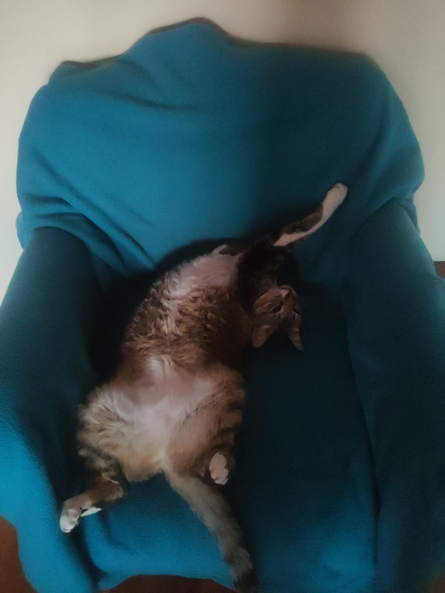

La manta turquesa

Esta manta turquesa vive en uno de los sillones y Mia la eligió como su escondite de siesta. Se hace un bollo justo entre los pliegues de la tela, tan chiquita que a veces cuesta encontrarla a primera vista. Es uno de los rincones que elige cuando quiere dormir sin que la molesten.